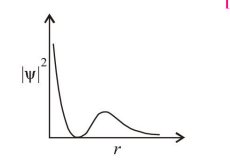
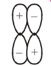
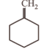
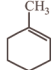
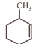
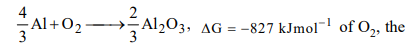

1.The density of 3M solution of sodium chloride is 1.252 g mL-¹. The molality of the solution will be: (molar mass, NaCl = 58.5 g mol-¹)
2.Mixture X = 0.02 mol of [Co(NH₃)₅SO₄]Br and 0.02 mol of [Co(NH₃)₅Br]SO₄, was prepared in 2 litre of solution. 1 litre of mixture X + excess AgNO3 → Y (ppt) 1 litre of mixture X + excess BaCl₂ → Z (ppt) No. of moles of Y and Z are
3. The shortest wavelength of H atom in the Lyman series is λ. The longest wavelength in the Balmer series is He is:
4. The graph between |ψ²| and r(radial distance) is shown below.

5. The ionic radii of O²⁻, F⁻, Na⁺ and Mg²⁺ are in the order:
6. In general, the property (magnitudes only) that shows an opposite trend in comparison to other properties across a period is :
7. Which of the following best describes the diagram of molecular orbital?

8. The type of hybrid orbitals used by the chlorine atom in ClO₂⁻, is
9. The species having pyramidal shape is:
10. For the process H₂O(l) (1 bar, 373 K) → H₂O(g) (1 bar, 373 K), the correct set of thermodynamic parameters is
11. A set of solutions is prepared using 180g of water as a solvent and 10g of different non-volatile solutes A, B and C. The relative lowering of vapour pressure in the presence of these solutes are in the order [Given, molar mass of A = 100 g mol⁻¹ B = 200 g mol⁻¹ C = 1000 g mol⁻¹ ]
12. 5 g of Na₂SO₄ was dissolved in x g of H₂O. The change in freezing point was found to be 3.82°C. If Na₂SO₄ is 81.5% ionised, the value of x (K for water = 1.86°C kg mol-¹) is approximately : (molar mass of S = 32g mol⁻¹ and that of Na = 23g mol⁻¹ )
13. Vapour pressure of pure benzene is 119 torr and that of toluene is 37.0 torr at the same temperature. Mole fraction of toluene in vapour phase which is in equilibrium with a solution of benzene and toluene having a mole fraction of toluene 0.50, will be :
14. In a closed system, A(s) ⇌ 2B(g) + 3C(g) , if partial pressure of C is doubled, then partial pressure of B will be
15. The concentration of water molecules in one litre of water at 298 K is
16. The strongest conjugate base is
17. In acidic medium: Cr₂O₇²⁻+ H₂O₂ → Cr³⁺ + O₂ If 1 mole of Cr₂O₇²⁻ reacts completely, moles of H₂O₂ required are:
18.Name of the structure of silicates in which three oxygen atoms of SiO₄⁴⁻ are shared.
19. In CH₃CH₂OH , the bond that undergoes heterolytic cleavage most readily is
20. Among the following compounds, the strongest acid is
21. Which of the following compounds will show the maximum 'enol' content?
22.In the free radical chlorination of methane, the chain initiating step involves the formation of
23. In the reaction with HCl, an alkene reacts in accordance with the Markovnikov's rule, to give a product 1-chloro-1-methylcyclohexane. The possible alkene is:



24. On the basis of the information available from the reaction

25. Assertion (A): A catalyst increases the rate of reaction but does not change the equilibrium constant. Reason (R): A catalyst lowers the activation energy of both forward and backward reactions equally.
26. A reaction has activation energy 50 kJ mol⁻¹. If temperature increases from 300 K to 310 K, the rate increases (approximately) by a factor of (R = 8.314 J mol⁻¹ K⁻¹):
27. For a certain reaction, slope of Arrhenius plot (ln k vs 1/T) is –6000 K. Activation energy is approximately (R = 8.314 J mol⁻¹ K⁻¹):
28.Among the following, which species shows the highest tendency to act as a reducing agent?
29.Why do transition metals form interstitial compounds?
30.
31.
32.
33.
34.
35.
36.
37.
38.
39.
40.
41.
42.
43.
44.
45.
Answer Key